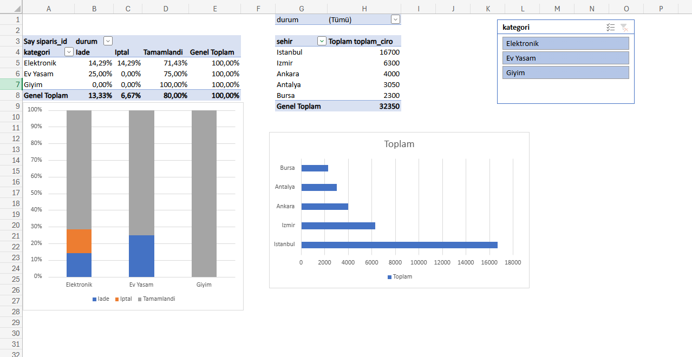

Merhaba, Ben Efe Fevzi
Türkel
Ben
|
Büyük veri kümelerini analitik modellere ve stratejik kararlara dönüştüren, Python, SQL ve iş zekası araçlarıyla (Power BI, Excel) çalışan 3. sınıf Bilgisayar Mühendisliği öğrencisiyim. Finansal veri, kredi risk analitiği, portföy performansı ve karar destek sistemleri üzerine yoğunlaşıyorum.
İstanbul Nişantaşı Üniversitesi
Veri Analizi & ML Projesi
İşlenen & Analiz Edilen Veri
Analitik Zihniyet & Tutku
Hakkımda & Vizyonum
Mühendislik temellerini verinin gücüyle birleştirerek iş kararlarına rehberlik eden içgörüler üretiyorum.
Verinin Diliyle Konuşuyor, Değer Üretiyorum
Merhaba! Ben Efe Fevzi Türkel. Ekim 2024 yılından bu yana İstanbul Nişantaşı Üniversitesi Bilgisayar Mühendisliği bölümünde lisans eğitimime (şu an 3. sınıf) devam ediyorum.
Mühendislik eğitimimdeki temel odak noktam; Veri Analitiği, İlişkisel Veritabanı Mimarisi ve Finansal Karar Destek Sistemleridir. SQL, Python (Pandas, NumPy) ve Excel araçlarını etkin kullanarak büyük veri kümelerini analiz ediyor; özellikle kredi risk analitiği, temerrüt (NPL) segmentasyonu ve portföy kârlılık metrikleri üzerine yoğunlaşıyorum.
Aynı zamanda Mart 2025 - Kasım 2026 döneminde OPET bünyesindeki görevimle dinamik ve yüksek tempolu çalışma ortamında operasyonel süreç yönetimi, vardiya sorumluluğu ve güçlü iş disiplini deneyimi kazandım. Coderspace onaylı Veri Bilimi ve Yapay Zeka Sertifikası sahibiyim.
Keşifsel Veri Analizi (EDA) & Temizlik
Ham veriyi eksik değerlerden ve aykırılıklardan arındırır, istatistiksel dağılımlar ve korelasyon testleriyle analiz için en uygun forma getiririm.
İş Zekası & Power BI Dashboard
Karmaşık iş metriklerini, satış trendlerini ve müşteri segmentlerini karar vericiler için anlık ve anlaşılır interaktif gösterge panellerine dönüştürürüm.
Makine Öğrenmesi & Modelleme
Scikit-Learn kütüphaneleriyle regresyon, sınıflandırma ve kümeleme algoritmaları kurgular; ROC-AUC, F1-skoru gibi metriklerle modelleri valide ederim.
İlişkisel Veritabanları & İleri SQL
PostgreSQL ve MySQL ortamlarında çok tablolu JOIN'ler, Window Functions ve alt sorgularla büyük veri setlerinden hızlı içgörüler sorgularım.
Uzmanlık Alanlarım
Projelerimde kullandığım güncel teknolojiler, programlama dilleri ve geliştirme araçları.
Python (Pandas & NumPy)
Veri Manipülasyonu & AnalizSQL (PostgreSQL & MySQL)
Karmaşık Sorgular & Veri ModellemeScikit-Learn & Makine Öğrenimi
Denetimli / Denetimsiz ÖğrenmePower BI & İş Zekası (BI)
Dinamik Dashboard & RaporlamaVeri Görselleştirme (Seaborn & Plotly)
İstatistiksel & Etkileşimli GrafiklerKeşifsel Veri Analizi (EDA) & İstatistik
Hipotez Testi & Dağılım AnaliziJupyter Notebook & Google Colab
Araştırma & İnteraktif NotlarGit & GitHub
Versiyonlama & Açık Kaynakİleri Excel & Veri Modelleme
Hızlı Pivot Analizleri & DoğrulamaEğitim & Deneyim
Mühendislik temelleri, kurumsal iş disiplini ve finansal veri projelerim.
Bilgisayar Mühendisliği Lisans Programı
İstanbul Nişantaşı Üniversitesi
Veri Yapıları ve Algoritmalar, Veritabanı Yönetim Sistemleri (RDBMS), İstatistik ve Olasılık, Bilgisayar Ağları ve Yazılım Mühendisliği prensipleri üzerine lisans eğitimi. SQL, Python ve veritabanı analitiği odaklı akademik çalışmalar.
Veri Bilimi ve Yapay Zeka Sertifikası
Coderspace
Python ile Veri Analizi, Scikit-Learn ile Makine Öğrenmesi, Keşifsel Veri Analizi (EDA), Yapay Zeka temelleri ve veri bilimi metodolojileri üzerine onaylı uzmanlık sertifikası.
Öne Çıkan Projelerim
GitHub üzerindeki açık kaynaklı veri analitiği, SQL veri modelleme ve interaktif karar destek paneli çalışmalarım.
 Finansal Risk / SQL & Excel
Finansal Risk / SQL & Excel
Kredi Risk Analitiği & Portföy Performans Paneli
Müşteri demografisi, kredi detayları ve taksit geri ödemelerini birleştiren uçtan uca kredi riski analizi. SQL ile ilişkisel veri temizleme, CASE WHEN mantığıyla 3 kademeli risk sınıflandırması (Normal, Riskli, Batık/NPL) ve Excel üzerinde dilimleyicili dinamik Yönetici Risk Dashboard'u.

E-Ticaret Analitiği / SQL & ExcelE-Ticaret Satış & Operasyonel Analitik Paneli
İlişkisel veritabanı (FK) mimarisiyle ham e-ticaret satış, sipariş ve müşteri verilerini SQL ile işleyen; Excel üzerinde dinamik çoklu Pivot Table ve Dilimleyicilerle kârlılık, iade matrisi (%0 giyim, %25 ev yaşam fire) ve bölgesel ciro dağılımını sunan analitik karar destek paneli.
Detaylı CV'mi İnceleyin veya İndirin
İstanbul Nişantaşı Üniversitesi Bilgisayar Mühendisliği eğitimimi, veri analitiği yetkinliklerimi, bağımsız projelerimi ve sertifikalarımı içeren güncel CV dokümanımı doğrudan tarayıcınızda görüntüleyebilir veya PDF olarak yazdırabilirsiniz.
Birlikte Veriye Değer Katalım
Veri analitiği odaklı bir staj, proje işbirliği veya kariyer fırsatı için bana dilediğiniz zaman ulaşabilirsiniz.
Bana Mesaj Gönder
Formu doldurarak doğrudan bana ulaşabilirsiniz. Tüm mesajlara en kısa sürede dönüş yapıyorum.